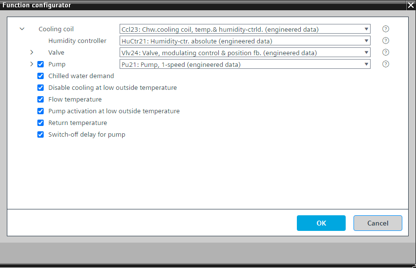

[Ccl23]冷冻水冷却盘管，温控，湿度控制
Program block, name / node subtype: [Ccl23] Chilled water cooling coil, temperature-controlled, humidity-controlled
Library hierarchy: Ventilation and air conditioning equipment
Family: Ccl
项目树 | 图表 |
|---|---|
|
|
|


Configurator


程序块存储在没有 I/Os. 的库中 使用auto-create and auto-connect函数创建 I/Os 和 /or 将它们连接到接口块，例如 R_A、CMD_B。或者，从包含库中预定义 I/Os 的文件夹中取出 I/Os，并从工厂中取出 /or，并将它们连接到接口块。
通过改变阀门位置和切换可选泵来控制送风温度（冷却）和送风湿度（除湿）。
送风湿度（除湿）的控制预设为绝对湿度 (HuCtr21)。您可以在功能配置器中将其更改为相对湿度。
对于用于在冷却盘管变得不活动之后将其值保持为“True”的操作状态的信号来说，存在延迟关闭时间，例如5分钟。阀门和可选泵的操作状态均等于“False”。如果在空气处理机组中使用（最有可能是这种情况），则冷却盘管的运行状态由 CMDSEQ_B 读取。如果设备即将关闭并且冷却盘管处于活动状态，则设备会在冷却盘管关闭的情况下运行一段时间以干燥盘管。在关闭期间，CMDSEQ_B 在该延迟时间长度内接收操作状态“True”，并在继续关闭之前等待。这有助于干燥线圈。
如果湿度控制器处于活动状态，则计算值表明除湿过程处于活动状态。该信息由空气处理机组中的其他组件（例如加热线圈和能量回收）读取，并且它们的温度控制被阻止。
该程序块具有以下可选功能：
Option: Pump (1xBO, 4xBI)
控制泵 (Pu21)。可以有不同的替代方案，例如 TwnPu21。
当阀门处于活动状态（阀门位置超过特定值，例如 4 %）时，泵启动；当阀门处于非活动状态（阀门位置低于特定值，例如 2 %）时，泵会在可选延迟后停止。
Option: Chilled water demand
产生需要冷冻水的信号。这通常由冷冻水供应协调功能读取，例如 SplyChw21 或 SplyChw22。
冷冻水需求有一个延迟关闭时间。
Option: Disable cooling at low outside temperature
低于一定的外部气温（例如低于 12 °C）时，将禁用冷却和除湿功能。
Option: Flow temperature (1xAI)
创建流动温度。
Option: Pump activation at low outside temperature
即使线圈未运行，也会在外部温度较低（例如低于 4 °C）时启动泵。
这改善了防冻保护。
Option: Return temperature (1xAI)
创建返回温度。
Option: Switch-off delay for pump
阀门激活时泵的关闭延迟。
如果上级逻辑（工厂级）发出异常信号，泵将立即停止。
姓名 | 描述 | 类型 | 报警/通知类 | 趋势/类型 |
|---|---|---|---|---|
|
Vlv | Valve | N/A | N/A | |
TCtr | Temperature controller | Ctr: Controller | N/A | N/A |
HuCtr | Humidity controller | N/A | N/A | |
DhuActv | Dehumidification active | BCalcVal: Binary calculated value | No | No |
姓名 | 描述 | 类型 | 报警/通知类 | 趋势/类型 |
|---|---|---|---|---|
|
Pu | Pump | N/A | N/A | |
ChwDmd | Chilled water demand | BCalcVal: Binary calculated value | No | No |
TFl | Flow temperature | AI：模拟输入 | 是的，4 | 是的，2 |
TRt | Return temperature | AI：模拟输入 | 是的，4 | 是的，2 |
描述 |
|---|
|
Pump activation at low outside temperature |
Switch-off delay for pump |
Disable cooling at low outside temperature |